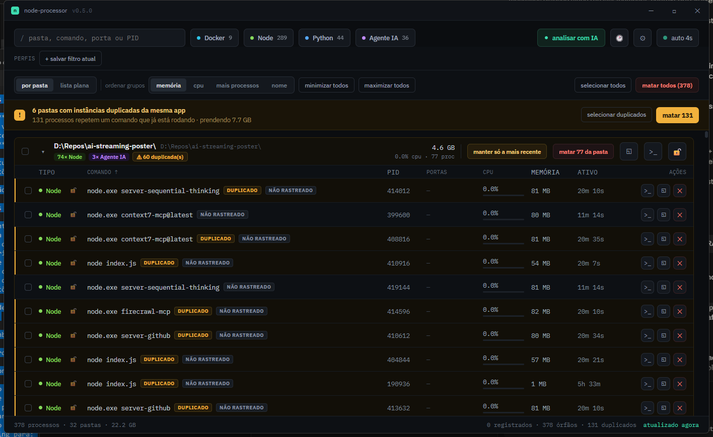

Node, Python, Docker e agentes de IA espalhados por dezenas de pastas de projeto. O node-processor acha todos — registrados ou não — mostra porta, CPU e memória, e mata o que você quiser com um clique.

npm run dev de três dias atrás, em uma pasta que você esqueceu. Achar quem é dá mais trabalho que resolver.node.exe idênticos.O registry dá o contexto rico. O scan do sistema garante que nada escape. O que não bate com o registry não é escondido — aparece marcado como não rastreado.
Binário assinado, sem dependências. Ele lê o dev-registry.json que você já tem e funciona mesmo sem ele.